Hungary · 2025
부다페스트, 이틀 — 온천에서 시작해 야경으로 끝났다
새벽 세 시의 기내식에서 시작해, 오전에는 온천에 몸을 담그고, 저녁에는 강 건너 불이 켜지는 걸 봤습니다. 2025년 10월의 이틀을 사진 순서 그대로 적었습니다.
도시마다 성격이 있다면 부다페스트의 성격은 물과 언덕입니다. 도나우강이 도시를 반으로 가르고, 왼쪽 부다는 언덕, 오른쪽 페스트는 평지입니다. 그래서 이 도시에서는 하루가 대체로 이렇게 흘러갑니다. 낮에는 평지에서 온천에 들어갔다가, 오후에 언덕으로 올라가고, 해가 지면 그 언덕에서 건너편에 불이 켜지는 걸 봅니다. 이틀 동안 정확히 그 순서로 다녔습니다.
새벽 세 시, 아직 하늘 위
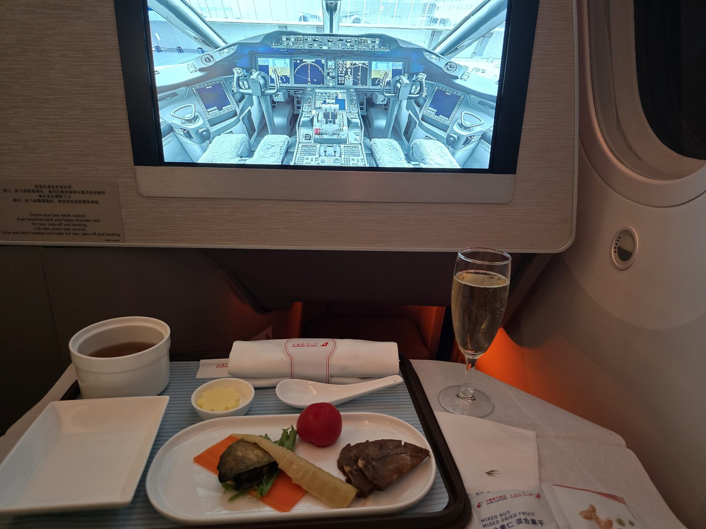
여행의 첫 사진은 도시가 아니라 좌석입니다. 이번 구간은 중국동방항공, 상하이 경유였습니다. 인천에서 한 번 끊고 상하이 푸둥에서 갈아타 부다페스트로 들어가는 길입니다. 유럽 직항보다 시간은 더 걸리지만 값이 눈에 띄게 내려갑니다.
트레이에는 애피타이저 한 접시, 버터 종지, 국물 한 컵, 그리고 스파클링 와인 한 잔이 놓여 있습니다. 냅킨에는 상하이항공(上海航空) 로고가, 옆의 견과·건과일 봉지에는 중국동방항공 로고가 찍혀 있습니다. 상하이항공은 중국동방항공 계열이라 이렇게 두 로고가 한 트레이에 같이 올라옵니다. 앞쪽 화면에는 조종석 사진이 떠 있습니다.
좌석 옆 안내판에는 네 줄이 적혀 있습니다. 착석 중에는 안전벨트를, 이·착륙 때는 헤드레스트를 세우고 어깨벨트를, 구명조끼는 사이드 콘솔 아래, 이·착륙 때는 핸드셋과 테이블을 접어 고정할 것. 장거리 노선에서 이 안내판을 읽고 있다는 건 대개 잠이 안 온다는 뜻입니다.
기록은 03:18에 찍혀 있습니다. 그리고 다음 사진은 여덟 시간 뒤, 도나우강 건너편의 온천에서 시작됩니다.
오전 열한 시, 야외탕
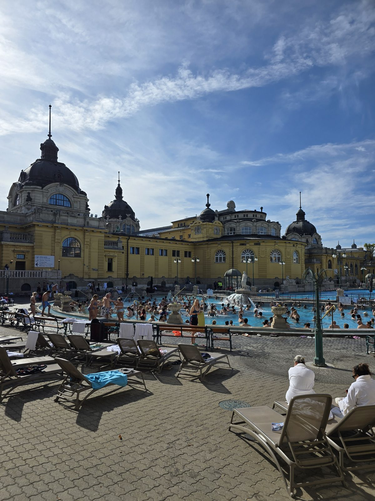
도착하자마자 간 곳이 세체니 온천(Széchenyi gyógyfürdő)입니다. 시민공원 안에 있는 노란색 네오바로크 건물로, 유럽에서 가장 큰 온천 중 하나입니다. 사진 속 야외탕에는 발 디딜 틈이 없습니다. 물은 형광에 가까운 하늘색이고, 그 뒤로 돔이 얹힌 노란 건물이 길게 늘어서 있습니다.
10월 초의 부다페스트는 낮에도 쌀쌀합니다. 그런데 야외탕의 물은 따뜻해서, 어깨 위로는 찬 공기가, 어깨 아래로는 더운 물이 동시에 닿습니다. 온천 가장자리에는 흰 가운을 입은 직원들과 접이식 의자가 늘어서 있고, 바닥은 물기를 머금은 회색 타일입니다.
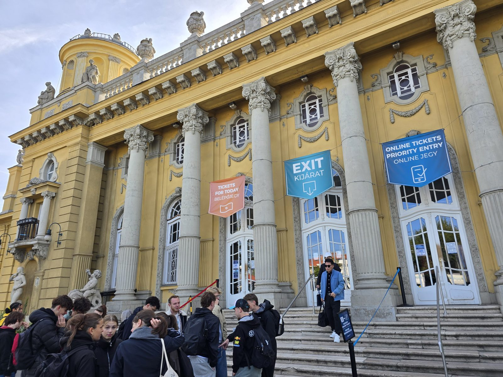
정문 쪽으로 나오면 기둥마다 현수막이 걸려 있습니다. 주황색은 TICKETS FOR TODAY / BELÉPŐJEGY(당일 티켓), 하늘색은 EXIT / KIJÁRAT(출구), 파란색은 ONLINE TICKETS PRIORITY ENTRY / ONLINE JEGY(온라인 티켓 우선 입장)입니다.
이 세 장의 현수막이 사실상 온천 이용법 전부입니다. 온라인으로 미리 끊으면 다른 문으로 바로 들어갑니다. 계단 아래에는 단체로 온 학생들이 몰려 서 있는데, 대부분 당일 티켓 줄입니다.
수영복, 수건, 슬리퍼는 챙겨 가는 게 좋습니다. 현장에서 빌릴 수 있지만 값이 붙습니다. 입장할 때 사물함(locker)과 탈의실(cabin) 중 하나를 고르게 되는데, 혼자라면 사물함으로 충분합니다.
정오 무렵, 영웅광장
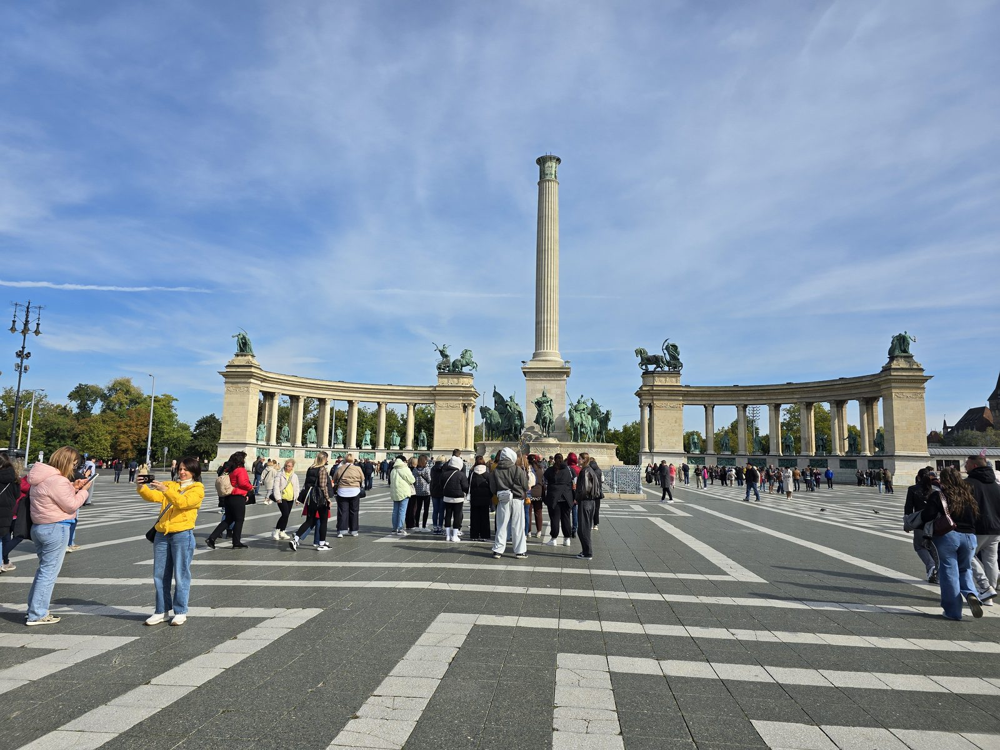
온천에서 걸어 나오면 바로 영웅광장(Hősök tere)입니다. 가운데 높은 기둥이 하나 서 있고 꼭대기에 대천사 가브리엘이 올라가 있습니다. 기둥 아래에는 헝가리를 세운 일곱 부족장의 기마상이, 좌우로는 반원형 콜로네이드가 팔을 벌리듯 감싸고 있습니다. 1896년 헝가리 건국 천 년을 기념해 만든 자리입니다.
그런데 정작 사진에서 가장 넓은 면적을 차지하는 건 기념비가 아니라 바닥입니다. 검은 돌과 흰 돌을 번갈아 깐 줄무늬가 화면 아래 절반을 채웁니다. 이 광장은 워낙 넓어서, 어디에 서든 사람이 작게 나옵니다. 노란 패딩을 입은 사람이 셀카를 찍고, 단체 관광객이 무리 지어 서 있고, 비둘기가 돌아다닙니다.
오후, 언덕으로
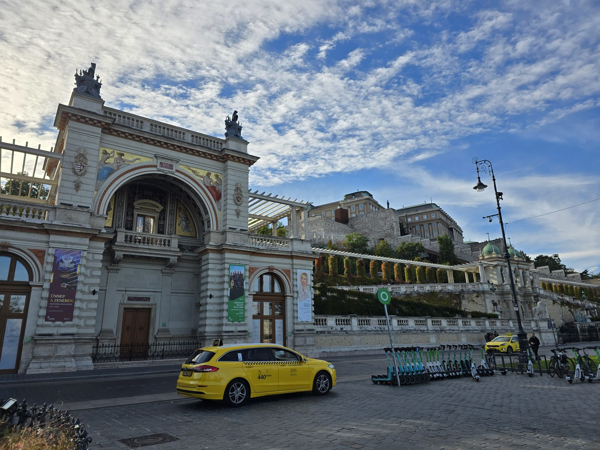
강을 건너 부다 쪽으로 가면 바르케르트 바자르(Várkert Bazár)가 있습니다. 부다 성 언덕 아래에 붙은 네오르네상스 건물로, 아치 안쪽에 금빛 모자이크가 박혀 있고 지붕 위에는 조각상이 올라가 있습니다. 오른쪽으로는 계단식 정원이 언덕을 따라 올라가고, 그 꼭대기에 부다 성이 보입니다.
여기가 중요한 이유는 경치가 아니라 동선입니다. 부다 성은 언덕 위에 있어서 걸어 올라가면 숨이 찹니다. 그런데 바르케르트 바자르 안에는 위로 올려주는 에스컬레이터와 엘리베이터가 있습니다. 성으로 가는 가장 편한 길이 사실상 여기입니다.
건물 앞에는 노란 택시가 서 있고, 그 옆으로 공유 킥보드가 스무 대쯤 줄지어 세워져 있습니다. 벽에는 실내악 시즌 공연 포스터가 붙어 있습니다. 백 년 넘은 건물 앞에 킥보드가 늘어선 풍경이 이 도시에서는 전혀 어색하지 않습니다.
성벽 위에서 마주친 촬영
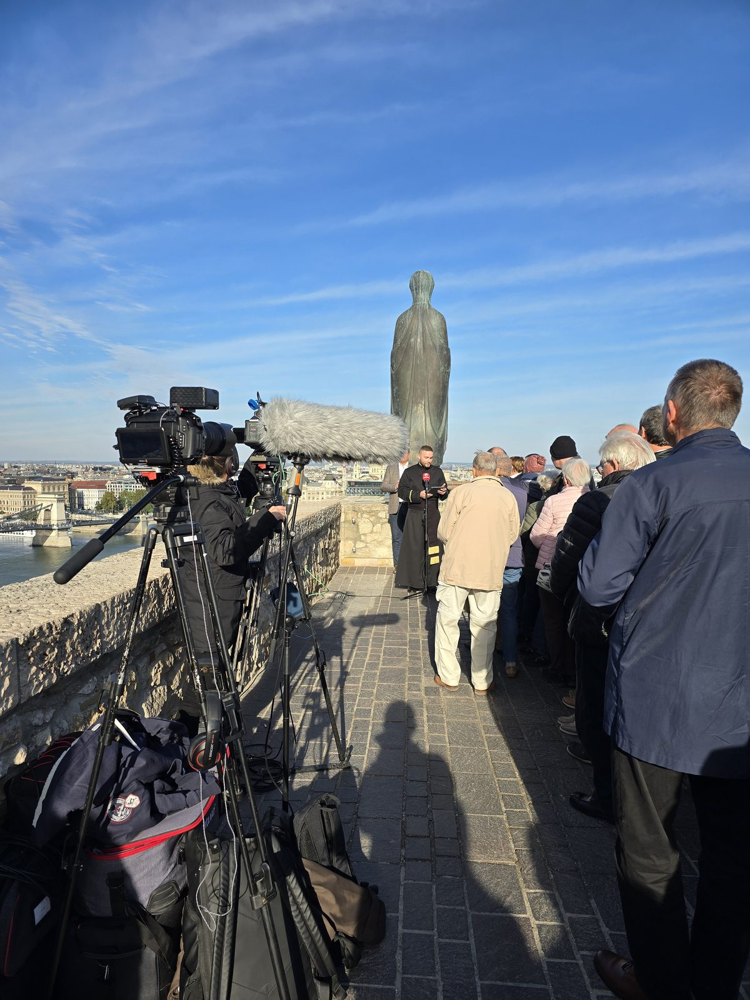
올라가 보니 성벽 위 좁은 통로에서 뭔가를 찍고 있었습니다. 삼각대에 얹은 방송용 카메라 두 대, 털이 복슬복슬한 붐마이크, 바닥에 널브러진 장비 가방들. 가운데에는 검은 수도복 차림의 사람이 붉은 마이크를 들고 이야기하고 있고, 그 앞으로 나이 지긋한 사람들이 반원으로 서서 듣고 있습니다.
뒤편에는 두건을 쓴 사람 형상의 청동상이 강 쪽을 보고 서 있습니다. 그 너머 왼쪽 아래로 세체니 다리와 도나우강이 보입니다. 무슨 행사인지는 끝내 알아내지 못했습니다. 다만 관광객으로 붐비는 자리에서 현지 사람들만의 일이 진행되고 있는 광경이었고, 그런 장면은 계획해서 볼 수 있는 게 아닙니다.
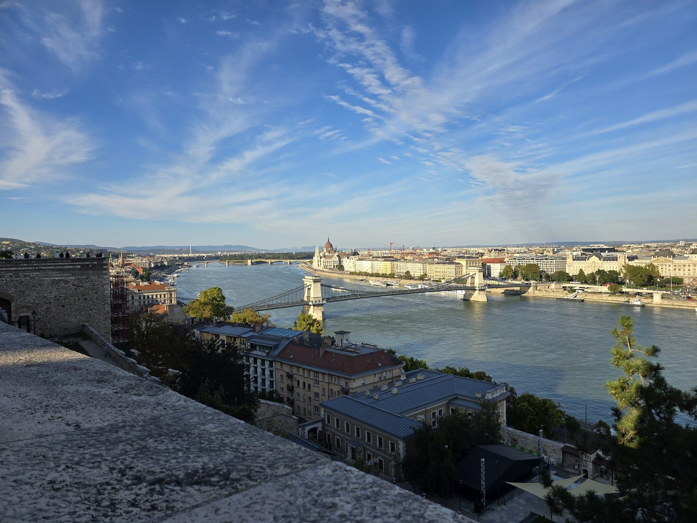
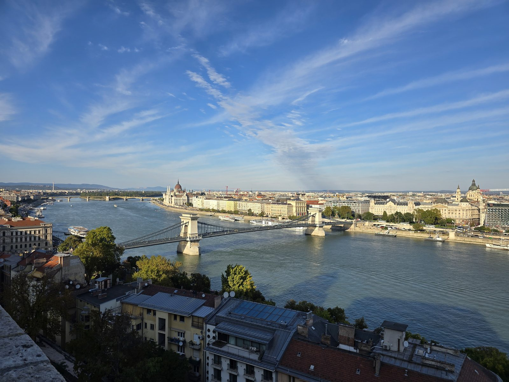
성벽을 따라 걸으면 계속 같은 것이 보입니다. 세체니 다리가 강을 가로지르고, 그 왼쪽 건너편에 국회의사당의 붉은 돔이 서 있고, 강에는 유람선이 줄지어 정박해 있습니다. 오 분 간격으로 찍은 두 장인데 각도만 조금 다릅니다. 그만큼 이 구간은 어디에 서도 그림이 됩니다.
세체니 다리는 부다와 페스트를 잇는 첫 영구 다리였습니다. 그전까지 두 도시는 배로 오갔고, 겨울에 강이 얼면 아예 끊겼습니다. 다리 하나가 놓이면서 부다와 페스트가 결국 하나의 도시가 됐습니다. 지금 이 도시의 이름 자체가 그 합병의 결과입니다.
해가 지는 두 시간
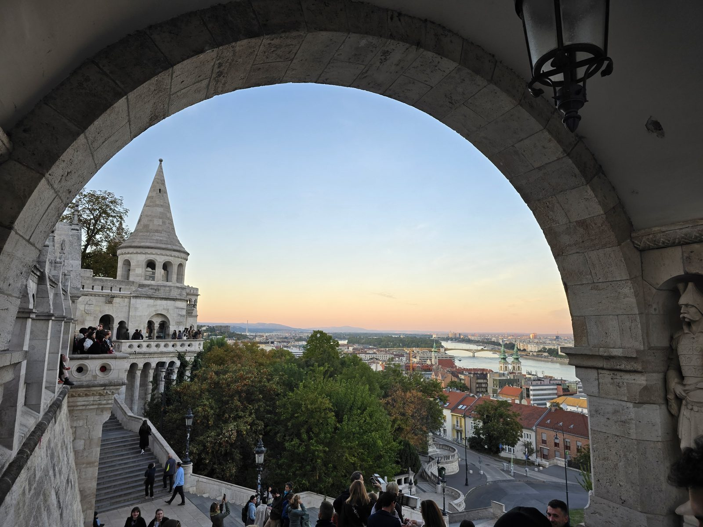
어부의 요새(Halászbástya)는 이름과 달리 방어 시설이 아닙니다. 1900년 전후에 전망대로 지은 건물이고, 하얀 석회암에 원뿔 지붕을 얹은 탑이 일곱 개 서 있습니다. 그 일곱이 헝가리를 세운 일곱 부족을 뜻합니다. 아침에 봤던 영웅광장의 기마상 일곱과 같은 숫자입니다.
사진은 아치 안에서 밖을 찍은 것입니다. 돌로 된 아치가 그대로 액자가 되고, 그 안에 노을과 강과 도시가 들어옵니다. 왼쪽 아래 계단에는 사람들이 앉아 있고, 오른쪽 벽감에는 병사 조각이 하나 서 있습니다. 하늘은 위쪽이 아직 파랗고 지평선 쪽만 주황빛입니다.
사십오 분 뒤. 하늘은 짙은 남색이 되고 국회의사당에 불이 들어왔습니다. 낮에는 회색 석조 건물인데, 밤에는 통째로 금빛입니다. 첨탑 하나하나에 조명이 들어가서 실루엣이 낮보다 오히려 또렷합니다. 강물에도 그 금빛이 길게 번지고, 그 위로 유람선 두 척이 미끄러져 지나갑니다.
1902년에 완공된 이 건물은 한때 세계에서 가장 큰 의사당이었습니다. 지금도 헝가리에서 가장 큰 건물이고, 높이는 96미터입니다. 이 96이라는 숫자가 다음 날 아침에 다시 나옵니다.
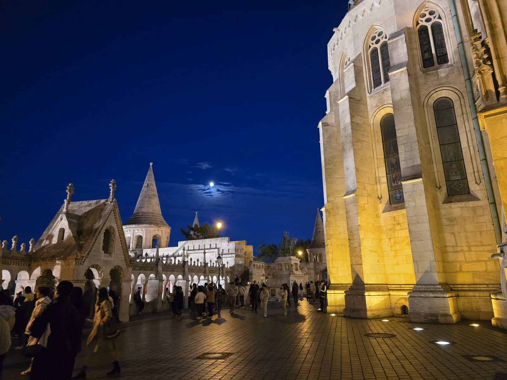
고개를 돌리니 어부의 요새 자체도 불이 들어와 있었습니다. 아래쪽은 노란 조명을 받아 따뜻하고, 위쪽 회랑은 흰빛에 가깝습니다. 난간을 따라 사람들이 빼곡히 서서 건너편을 보고 있고, 원뿔 지붕 사이 짙푸른 하늘에 달이 하나 떠 있습니다.
이 언덕에서 보내는 해 지기 한 시간 전부터 어두워진 뒤 삼십 분까지가 부다페스트에서 가장 값진 시간입니다. 이날 사진도 18:03, 18:48, 18:55에 몰려 있습니다. 낮에 다른 일정을 넣더라도 이 두 시간만은 언덕 위에 있는 게 좋습니다.
둘째 날 아침 — 96미터와 한 그릇
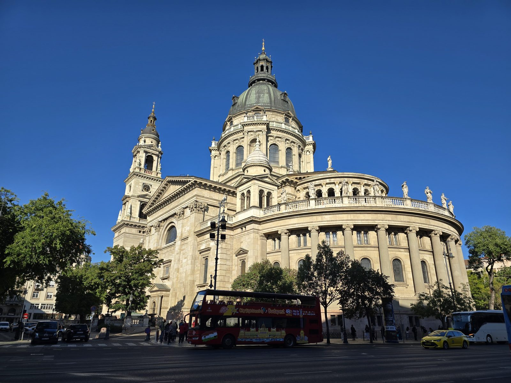
이튿날 아침의 성 이슈트반 대성당(Szent István-bazilika)은 하늘이 유난히 파랬습니다. 청동이 산화해 초록빛이 된 돔과 그 옆의 종탑, 난간 위에 늘어선 성인 조각들. 앞으로는 빨간 이층 관광버스가 지나갑니다.
이 성당의 높이도 96미터입니다. 전날 밤에 본 국회의사당과 정확히 같습니다. 우연이 아니라 규칙이었습니다. 세속 권력과 종교 권력 어느 쪽도 상대보다 높지 않게 한다는 뜻이었고, 오랫동안 이 도시에서는 96미터보다 높은 건물을 짓지 못했습니다. 숫자 96은 건국 천 년을 기념한 1896년에서 온 것이기도 합니다.
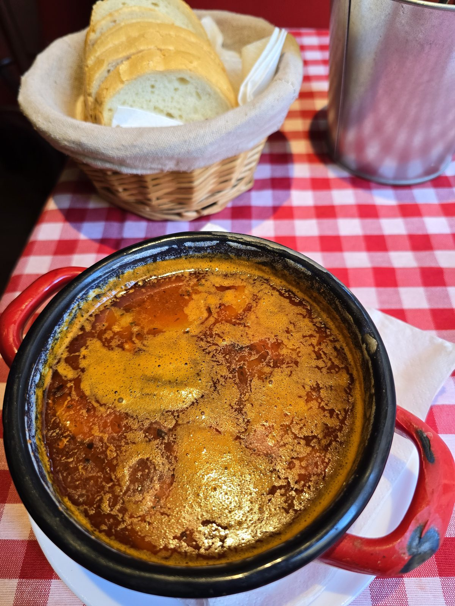
그리고 구야시(gulyás). 빨간 체크무늬 식탁보 위에, 손잡이가 빨간 검은 무쇠 냄비에 담겨 나옵니다. 이 냄비를 보그라치(bogrács)라고 부르는데, 원래 목동들이 들판에서 걸어놓고 끓이던 솥의 모양입니다. 국물 위에 파프리카 기름이 주황색으로 떠 있고, 옆에는 흰 천을 깐 바구니에 빵이 담겨 나옵니다.
한국에서 구야시를 검색하면 '헝가리식 스튜'라고 나오는 경우가 많은데, 현지에서 구야시는 국물 요리(leves)입니다. 걸쭉하게 졸인 스튜를 기대하고 시키면 다른 게 나옵니다. 진한 쪽을 원한다면 퍼르켈트(pörkölt)를 찾으면 됩니다. 여행 마지막 끼니로 뜨거운 국물을 고른 건, 아마 10월 아침 공기 때문이었을 겁니다.
이틀을 돌아보고 — 실전 정보
- 기간2025년 10월 3일 ~ 4일
- 동선세체니 온천 → 영웅광장 → 바르케르트 바자르 → 부다 성 · 어부의 요새 → 성 이슈트반 대성당
- 가는 길중국동방항공, 인천 → 상하이 푸둥 경유 → 부다페스트
- 날씨낮 15~20도, 아침저녁은 겉옷이 필요하다
- 통화포린트(HUF). 유로가 아니다
- 입국솅겐 지역. 독일·체코·오스트리아와 90일을 함께 쓴다
1. 상하이 경유는 값을 아끼는 대신 시간을 쓴다
유럽까지 직항 대신 중국동방항공 상하이 경유를 골랐습니다. 값은 확실히 내려가지만 총 이동 시간이 길어지고, 푸둥에서 갈아탈 때 보안검색을 다시 받습니다. 환승 대기가 길면 공항 밖으로 나갈 수도 있는데, 한국 여권은 현재 무비자 30일이 시행 중이라 예전보다 문턱이 낮습니다. 다만 시행 기간이 바뀌므로 출발 전 확인하세요.
수하물이 최종 목적지까지 연결되는지는 발권할 때 확인해 두는 편이 좋습니다. 연결이 안 되면 상하이에서 찾아 다시 부쳐야 합니다.
2. 헝가리는 유로를 쓰지 않는다
EU 회원국이지만 통화는 포린트입니다. 체코의 코루나와 같은 상황입니다. 유로로 받아주는 관광지 가게가 있어도 환율이 크게 불리합니다. 시내 ATM에서 뽑을 때는 현지 통화로 결제(포린트 청구)를 고르세요. "원화로 환산해 드릴까요"를 수락하면 수수료가 얹힙니다.
3. 온천은 온라인으로 끊고, 짐은 미리 챙긴다
세체니 정문의 현수막이 말해주듯 온라인 티켓은 줄이 다릅니다. 수영복·수건·슬리퍼는 가져가는 편이 싸고, 입장할 때 사물함과 탈의실 중 하나를 고릅니다. 야외탕은 사람이 많으니 오전 이른 시간이 낫고, 젖은 채로 나오면 10월 공기가 꽤 찹니다.
4. 부다 성은 걸어 올라가지 않아도 된다
언덕이 생각보다 가파릅니다. 바르케르트 바자르의 에스컬레이터·엘리베이터를 쓰면 힘을 아낄 수 있습니다. 케이블카(부다바리 시클로)도 있지만 줄이 길고 값이 있습니다. 버스로 올라가는 방법도 있으니, 체력을 저녁 시간대에 남겨두는 쪽을 권합니다.
5. 택시는 길에서 잡지 않는다
부다페스트는 길에서 세운 택시의 바가지가 오래된 문제입니다. 호출 앱을 쓰거나 숙소·식당에 불러달라고 하세요. 관광지에서는 사설 환전소도 조심해야 합니다. 체코 프라하와 같은 종류의 함정이 여기에도 있습니다.
6. 저녁 두 시간은 언덕에 둔다
이 도시의 야경은 건너편에서 봐야 완성됩니다. 부다 언덕에서 페스트를 보는 구도입니다. 어부의 요새 위층 전망대는 일부 구간이 유료인데, 시간대에 따라 무료로 열리기도 하니 현장 안내를 확인하세요. 무료 구간에서도 충분히 보입니다.
7. 10월 초는 옷을 두 겹으로
낮에는 재킷 하나로 충분한데 해가 지면 급격히 식습니다. 사진 속 사람들도 낮에는 얇게, 밤에는 패딩을 입고 있습니다. 온천에서 젖은 머리로 나올 계획이라면 모자 하나가 큰 차이를 만듭니다.
남는 것
이 도시에서 가장 오래 서 있었던 곳은 어부의 요새 난간이었습니다. 여섯 시 조금 넘어 올라가서, 하늘이 파랑에서 남색으로, 남색에서 검정으로 바뀌는 걸 끝까지 봤습니다. 건너편 건물에 불이 들어오는 순간이 한 번에 오는 게 아니라 조금씩 번지듯 온다는 걸 그때 알았습니다.
부다페스트는 이틀이면 주요한 것을 대충 볼 수 있는 도시입니다. 대신 그 이틀을 어떻게 자르느냐가 전부입니다. 낮에 온천에서 힘을 풀어두고, 오후에 언덕으로 올라가고, 해 질 무렵을 위에서 맞는 것. 다시 온다면 순서는 그대로 두고 하루만 더 붙일 것 같습니다.